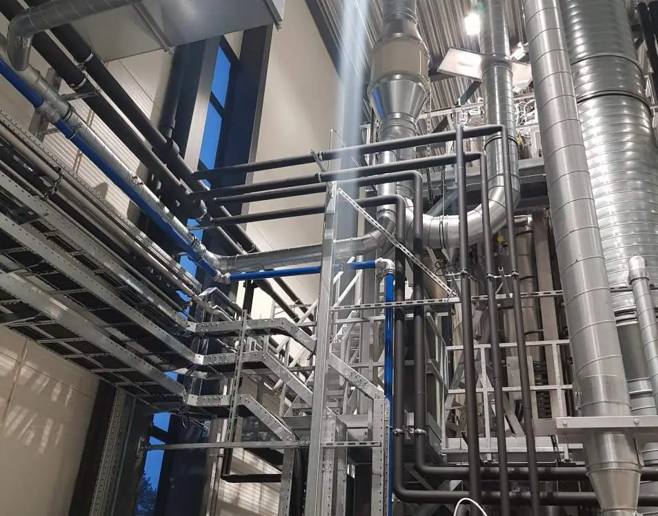

Tjenester
Kjøling, brann og rør.
Vi leverer tilpassede tekniske systemer for kjøling, brannsikring og energiløsninger — for næringsbygg og private eiendommer.
Kjøling og temperaturkontroll
Skreddersydde kjøleløsninger for datasentre, tekniske installasjoner og bygg med høye krav til drift og stabilitet.
Vi dimensjonerer etter faktisk varmelast, og planlegger for redundans der det er nødvendig.
- 01DatasenterKjøling med redundans og overvåking.
- 02Tekniske romStabil temperatur der utstyr står tett.
- 03ProsessKjøling for produksjon og industri.

Sprinkler og vanntåke
Brannsikringsanlegg med full dokumentasjon, prosjektering og utførelse — tilpasset byggets risikoprofil og gjeldende krav.
Prosjektering
Risikoprofil
Vi dimensjonerer anlegget etter bruk, lagring og byggets forutsetninger.
Utførelse
Montering
Rør, dyser og sentraler monteres og trykktestes etter krav.
Dokumentasjon
For ettertiden
Dokumentasjon som drift og kontroll kan bruke i årene som kommer.

Rør og varme
Komplett rørteknikk og energiløsninger for næringsbygg, industrianlegg og utvalgte private prosjekter.
Vi tar prosjektering, montering og innregulering, og leverer anlegget med dokumentasjon.